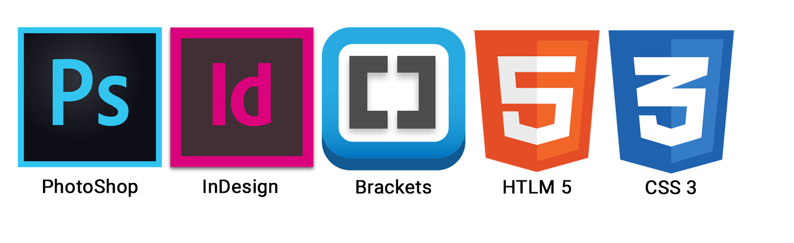

Stilartsite - Dekonstruktivisme
Brugte værktøjer i denne opgave:
Dette var vores første hjemmeside vi skulle designe, og det viste også sine tydelige tegn, idet vi lærte meget i løbet af processen. Vi fik uddelt en stilart i de forskellige grupper, og min gruppe fik til opgave at arbejde med Dekonstruktivisme. Jeg kendte ikke stilarten og brugte derfor en del tid på at finde ud af hvordan dekonstruktivisme var defineret. Vi fik i gruppen lavet et moodboard og efter flere dages research fik vi lavet et PowerPoint med stilartens vigtigste punkter.
Link til PowerPoint her.

Det var vores første projekt og mit første rigtige møde med Photoshop, Illustrator, InDesign, Brackets og CSS. Det var en stor og i starten uoverskuelig opgave at give sig i kast med, men som i sidste ende gav god mening og en masse erfaring. I opgaven med at skabe hjemmesiden lærte jeg hvordan HTML former hjemmesiden, for derefter at bruge CSS til at designe hjemmesidens udtryk.
Derefter blev det et individuelle projekt med ens egen forståelse for den givne stilart, projekt skulle målrette sig børn i målgruppen 13-16 år.
Vi blev præsenteret for:
- Skrifttyper
- Design og farver
- Html
- CSS
- Splash-billede og ikon

Individuelt skulle vi lave et splash-billede som præsenterede stilarten. Tanken med mit splash-billede var, at vise at dekonstruktivismen er, at dekonstruere noget og genskabe noget nyt og uventet. Det jeg har gjort på mit splash-billede er, at sammensætte en struds med en hundetunge og en gammeldags vaffelis. Jeg kan konkludere at jeg har lært en del siden forløbet og fået en bedre forståelse for design. Først blev vi præsenteret for HTML og skulle ikke tænke på design, men blot at skabe hjemmesiden. Efterfølgende blev vi præsenteret for CSS som gjorde en stor forskel og nu kunne vi pludselig begynde at designe vores hjemmeside.
Den endelige hjemmeside skulle indeholde:
- Splash og ikon
- Intro
- Om
- Typografi
- Komposition/farver
- Links
- Ekstra